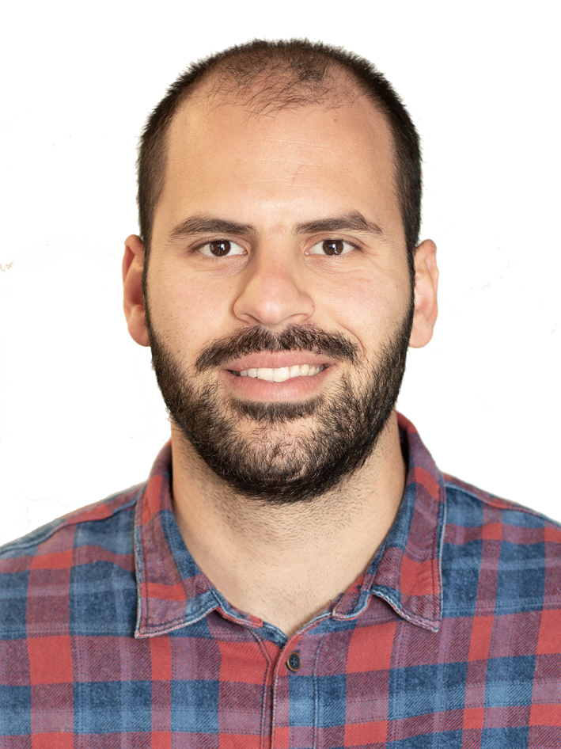

As a software engineer with over 6 years of experience, I have worked mostly in the backend as well as
in the frontend,
implementing best practices like TDD and BDD, following good principles like SOLID, DRY, KISS and YAGNI
and software
engineer design patterns. My interests lie in system design and architecture and I am equally effective
in a team
environment or as a lone specialist.
- Experience
-
Software Engineer ASOS; November 2019 - Present
Currently working on a team that is responsible to integrate the
Product
Information Management system with other internal teams through API calls in a
devops culture. High performance, resiliency and scalability are the key areas we
are working on.
- Developing new features and maintaining more than 25 microservices
- Introduced after tests resources clean up that reduced the Azure cost by 10%
- Following the agile Kanban methodology
- Delivering trainings on Docker and Kubernetes
- Organised a series of meeting to collaborate with other teams and share solutions
- Led a series of meeting discussing new tech stack
- Presented the difference between JUnit 5 and Spock framework and how it
affects developer’s efficiency
Tech Stack
- Java 11
- Python
- Spring Boot
- Swagger
- Kubernetes
- Azure (AKS, Service Bus, Storage, Cosmos DB)
- ELK stack
- Grafana
- Docker
- Helm
- Github
- Jenkins
- JUnit5
- Gatling
- Wiremock
- Gradle
Software Engineer Camelot Lottery Solutions; August 2017 - October 2019
Took part in developing new features for a Keno type game for the
Loterie
Romande interactive platform. Giving emphasis on performance, availability and
time synchronisation of the 255 draws every day.
- Redesigned the draw-based game model
- Integrated a new apixu API providing weather information
- Upgraded Spring 4 to Spring 5
- Exposed new APIs using Spring Reactor and Server-Sent Events
- Working on Kubernetes cluster for our QA environments
Tech Stack
Self-assessed levels: [awareness, working, practitioner, expert]
- Java 8
- Groovy
- Spring Boot
- Spring Data
- Spring Integration
- Kubernetes
- Cassandra
- Docker
- Git
- Jenkins
- Spock
- Wiremock
- Gradle
Worked on the UK National Lottery web platform which is visited by
millions of
users per day and handles up to 4000 payment transactions per minute. A highly
regulated environment with stress on security and performance.
- Led meetings on automation testing and troubleshooting improvements
- Initiative to create tools that reduced manual testing
- Provided assistance to the BA to define acceptance criteria in complex tickets
- Organised a workshop to define our automation test strategy
- Education
-
Harokopio University of Athens
BSc Informatics and Telematics, 2:1
- Certified courses
-
- NeoLoad training from Neotys 2018
- Codebashing Security Training for Java 2018
- Docker for Java Developers 2018
- Software Architecture for Software Engineers 2018
- Java Memory Management 2019
- Kubernetes Certified Application Developer (CKAD) 2021
- Conferences
-
- References
- Available on request